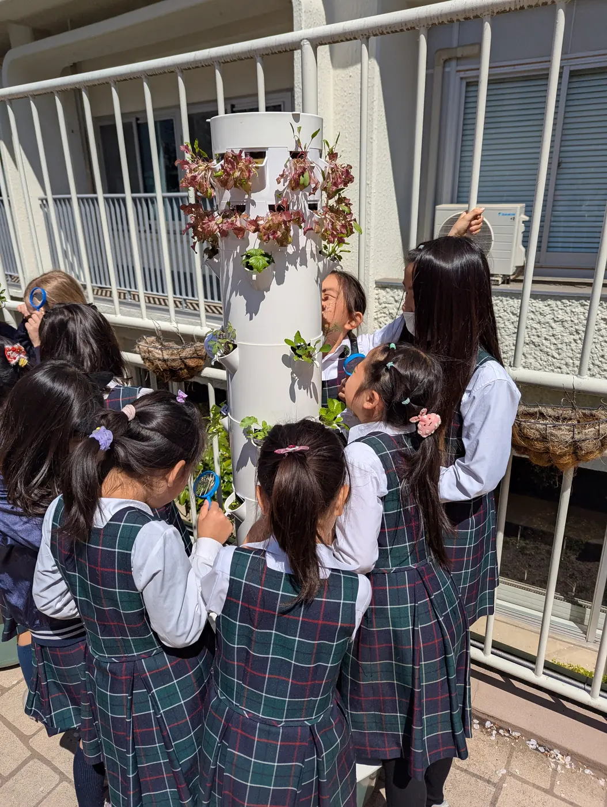

プログラム一覧
概要
Greentopiaは東京のインターナショナルスクールと連携し、都市農業とSTEMを体験から学ぶ教育を届けています。水耕栽培のタワーファームを学校に持ち込み、生徒たちは本物の野菜を植え、育て、観察し、収穫しながら、科学、サステナビリティ、栄養について学びます。水をテーマにしたIPCの単元、植物生物学を扱うFOSSのモジュール、あるいは独自のサステナビリティの取り組みなど、先生方と協力して、すべての授業を既存のカリキュラムに合わせます。プログラムは5回から1学年度まで対応しています。
カリキュラムとの連携
私たちのプログラムは、IPC（International Primary Curriculum）、NGSS（Next Generation Science Standards）、FOSS（Full Option Science System）などの枠組みに組み込めるよう設計されています。水循環、エネルギーと光、植物生物学、栄養、環境サステナビリティなどの単元と水耕栽培の内容を連携させてきた実績があります。プログラム開始前にカリキュラムコーディネーターの方と打ち合わせ、私たちの授業を学校の学習目標に合わせます。学校が私たちに合わせるのではありません。
進め方
水耕栽培タワー、種、養分、pHキット、必要に応じて育成ライト、授業の教材まで、すべて私たちが用意します。各回の授業は私たちの講師が学校で行います。植え付け、計測、トラブル対応、収穫を行うのは生徒たち自身です。先生方にもぜひご参加いただけますが、準備や指導は必要ありません。授業はすべて私たちが担当します。プログラムの最後には、生徒は自分で育てた野菜を持ち帰り、多くのプログラムでは小さな栽培システムを自分で作って持ち帰ります。
料金の目安
カリキュラム連携プログラムは5回で¥100,000から。放課後プログラムは生徒1人あたり週1回1時間につき¥3,500〜4,500です。ワークショップとキャンプの料金は形式により異なりますので、詳しくはお問い合わせください。教材、機材、指導料はすべて料金に含まれます。
保護者の方からのよくある質問
学校向けプログラムの多くはキンダーから6年生が対象ですが、13年生までの生徒向けの内容も設計しています。年齢に合わせて内容の難しさや言葉づかいを調整します。
まったく必要ありません。基礎から始めて、少しずつステップアップしていきます。以前にプログラムに参加したことのある生徒は、さらに深く学びます。
プログラムによって、収穫したての野菜、マイクログリーンの栽培キット、自分で作った小さなDIY水耕栽培システムなどを持ち帰ります。
はい。システムは食品グレード・BPAフリーで、農薬は使用していません。厳格な食品衛生ルールに従い、安全な収穫と洗い方も生徒に指導します。
育てるのは葉物野菜、ハーブ、エディブルフラワーです。気になることがあればお知らせください。対応いたします。
育てる体験を、ご家庭でも。
学校で育てている野菜に、お子さまが夢中になっていませんか？ ご自宅用にタワーをリースすれば、室内でもベランダでも一年中栽培を続けられます。配送・設置から使い方のご説明まで、すべてお任せください。リースは月額¥11,000から。料金はお選びいただくサービス内容によって異なります。